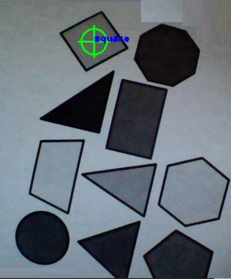

The Late Late Animals
>
One aspect of modern technology that has become more prominent over the last few years is Augmented Reality (AR), which allows for a person to interact with a simulated environment. This has numerous different applications. It helps trade workers train without the risk of being exposed to hazardous materials or potential injuries. There are public speaking practices that one could use to gain the confidence to speak in front of an audience. There are even simulated surgery procedures that can record and replay procedures and provide analytic and performance scoring. It is clear that AR technologies are shaping the future. We focused on the education side by finding an innovative approach to develop shape recognition into the school system. Our project simulated an AR environment where the software can identify a variety of shapes in real time. PCC++OpenCV, OpenGLJun - Aug 2018For a school project at SFU - ENSC 482. We had to choose an OpenCV project to do. As someone who is passionate about XR, I convinced my team members that this project would be extremely fun and challenging to do. The goal is to allow the program to be implemented in an education environment such as a classroom. This provides improvement in the interactions between the teachers and their students. In addition, it keeps the students more engaged to learn basic geometry and recognize shapes in an entertaining way I was in a group of 3 - with 2 other developers. This project will use a camera to identify various shapes in real time. To achieve this, an algorithm was programmed in C++. OpenCV and OpenGL are also used to link to the webcam enabling real time video and resulting in shapes being recognized.After filtering and binarizing our input, a significant amount of background noise was still present in the threshold image. Specifically, noise was present if anything other than the shapes on the paper were included in the capture process. The noise would then be recognized as random shapes such as octagons and triangles. Therefore, to process our video, I had to figure out how to make our program take each frame and analyze it. I went with a canny edge detector to filter and binarize our frame. I had to figure out how to use the gaussian filter to reduce the noise. The smoothened image is then filtered with a kernel in both horizontal and vertical direction. Below was one of the tests with filtering and detecting edges on the frameAfter the issue with filtering. I also encountered issues with getting C++ code to analyze the frame to piece together the shapes. Namely, getting the program to look out for angles, edges and vertices. E.g A triangle has 3 edges and vertices while a square and rectangle have four each. Other shapes such as a pentagon or an octagon have more than four edges. As a result, getting all possible edges was becoming difficult especially those with more than 5 edges caused the program to provide the wrong classification. I worked around this by calculating the angles between each edge of the shapes we detect then compare the calculated angle to expected angles for each shapes. This allowed me to find tune the classification algorithm. I implemented this by getting the coordinates of each vertex that was detected earlier by the Canny edge detection function. It then calculates angles by taking three of the coordinates and applying basic coordinate algebra. This allows the program to fine cosine of the angle between the lines formed by the three points. Then in the classification algorithm, the calculated angle is compared against a range of possible angles that could exist for each shape. Below is the visualization of what the program is looking forMy team and I decided that to avoid any errors on initial testing, we should test with still image captures. Before implementing a real time solution. We wanted to make sure that the algorithm worked on a simple file input. Nevertheless, this was a promising start, we split up tasks and I was tasked to continue to modify the code to improve the result.Next, we connected the laptop webcam as the main input source. For this phase, we printed out a page of the shapes from the figure earlier but in black and white. This change would not affect the overall efficiency of the algorithm as the initial testing results proved that colored images were not an issue when recognizing shapes. The main goal was to make sure that the algorithm was able to process an actual image capture which would introduce imperfect lighting conditions, shadows and background noise. Figure below shows that while the capture processing was successful, some shapes were still being incorrectly identified as in the case with the circle being labeled as an octagon. This is despite the fact that the accuracy in the recognition was vastly improved compared to the initial testing phase. The final testing phase saw us implementing the hardest portion - perform the recognition process in real time while holding samples in front of the camera. We first started using the method of absolute difference of two frames (an updated current frame and its previous frame) to attempt to recognize the shapes. This would eliminate background objects that did not move. However, no matter what sensitivity value was assigned to the Threshold filtering, 9 out of 10 times, the shapes were not being recognized properly or not being recognized at all. As shown below, Only 1 shape was being recognized. This was due to the final threshold image not recognizing contours consistently using absolute difference. (White colored pixels in the final threshold value lets us know that something will be recognized.

We decided to add unknown labels and replaced absolute difference with only one frame. This allowed us to analyze if contours can be recognized better without analyzing two frames. In the figure below we can see that the shapes were being recognized better with using only one frame. Any other shapes in the background, including unknown contours are recognized.We then removed the unknown labels to see if the output will display only labled shapes we desire. In the figure below, the shapes are being classified and moving the target throughout the view space of the camera, the label would follow the shapesAnd since this was an AR project, and we still had some time, I pushed to add a trace over the shape. We first tried with a 2D shapeTo give the full AR experience. I asked if we can try to do a 3D trace, we agreed and below is the resultHaving successfully implemented our augmented reality program, we began testing to get a sense of how robust the algorithm was. The cases involved scenarios such as a change in the lighting of the environment, angle of the paper being help and a colored printout of the objects. Observing the results, the shape that obtained the highest probability of being consistently recognized correctly is the quadrilateral. This encompasses all four sided shapes. This comes as no surprise as it is a relatively easy object to classify. On the opposite side of the spectrum, the octagon had the lowest probability of being correctly identified multiple times. A reason for this is that the angle threshold for the angles at the vertices of the octagon starts having a hard time differentiating if it is actually a circle instead. If we take a look at the probability of successfully detecting a circle, our reasoning is supported as circles had the second lowest chance of being correctly identified. The results of this testing is shown in the table below For fun, at home I tried to see if the shape will recognize any other shapes. Such as Oculus logoOr a microsoft logoOr spiderman!